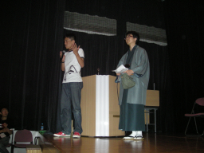
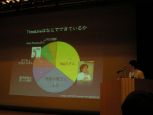
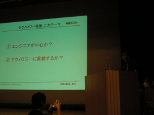
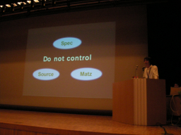
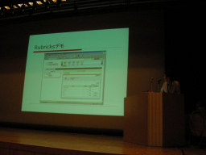

Sponsors' Session
このセッションの司会は、かくたにさんと高橋会長です。 会長は羽織袴での登場。 「残念ながら」鈴木さんではありません。
スポンサーセッションでは、スポンサーの方のRubyの熱い想いを一般の方に語っていただきます。 10社中3社はリジェクトされました。
- Sun
- 他にも発表があるので
- 永和システムマネージメント
- ツインスパーク
- おふたりが司会として壇上に
質問はあとでまとめて。
RubyとDB2 (日本アイ・ビー・エム・システムズ・エンジニアリング株式会社)
佐々木様
- 発表による資料
- RubyKaigi2007_IBM.pdf （344 KB）
Specialist集団。最先端の技術の調査、ノウハウの蓄積をやっている。
今年にはいってから社内のRubyのコミュニティもできた。 個人的にRubyへの想いを語ってもいいが、ここは会社の紹介を
IBMといえばJava?
Scripting in IBM
- ZendCore for IBM
- エンタープライズ向けPHP
- System-I (オフコン)での事例も
- Jython
- Python/WebSphere
- J2EE上で動く
- Perl for z/OS
- メインフレームでも動く！
- PHP for z/OS
- メインフレームでも動く！
- Python(以前)
- ThinkPad Rescue and Recovery
- すべてPythonで動いている
- 「あとからPythonを加える方は気をつけてください」
Ruby?
Starter Toolkit for DB2 on Rails
RubyとRailsとDB2が入っている。線路の上にDB2が乗っているロゴ。 マスコットはありませんが。
実際これはなにか？ - Instant railsのDB2版です。
- DB2 Express-C (無償版)
- Ruby
- Rails
インストールは30分から1時間くらいです。Windows版とLinux版があります。 Macの方はせっかくIntelのCPUが載ったのでWindowsを入れていただいて :P
DB2へのアダプタがはいっています。ibm_db2。
DB2以外もやります - IBMのデータベースアダプタ
- http://rubyforge.org/projects/ibm_db …ではなく http://rubyforge.org/projects/rubyibm でしょうか？ (ロガー)
DB2はXML-DBなので、XMLに対する問い合わせもサポートしている。
るびま18号にも記事がありますし、 Ruby on RailsによるWebアプリケーションの開発 (developerWorks Japan)は2年間ずっと10位以内の人気記事にはいっている。
「JavaからRubyへ」- 著者はもともとIBMの人で、「境界を越える」という記事も書いて いる。
RubyとRuby on Railsの活用事例（Nifty株式会社）
ポータルサイトの開発（ディレクション）をやっている部署
@nifty TimeLine β
- @niftyラボでβ版として
- リリース後の反応
- はてブで590users!
- ニフティらしくないサービス
なぜ作ったのか？
- 新しい開発手法
- 新しいコミュニティ
なぜRails導入にいたったか
- 企画／開発一体型のトライアル
- 社内受注みたいな形でやっていた
- 技術系社員の技術力向上
- CMSでの作業が多い
- Web開発プラットフォームの選定
開発スタイル
- 本業の合間に
- 木曜はRailsの日
- ラボルームにこもって開発
- アジャイル開発
システム構成各種データについて
TimeLineはなにでできているか 
- NaClが３５％
- 毎週木曜日と土日２９％
- 通常業務の空き時間１１％
- まつもとゆきひろ１０％
- DaveThomas８％
- 上司の理解７％
apache2.0 + mod_proxy
（システム構成を出してたけど、これくらいしかかけませんでした）
| 登録ユーザー数 | 3,000ユーザー |
| 登録タイムライン数 | 2,500件 |
| 登録記事数 | 35,000件 |
| Controllers | 12+6 |
| Models | 8 |
| Heolpers | 8 |
| Views | 116 |
負荷対策
- キャッシュ
- DBチューニング
- BlogParts用チューニング
- Proxyサーバ、xmlのpage caching
今後の課題
- ユーザーの声を出来るだけ早く具現化する
- ”自分らしさ”
- ほかのサービスとの連携
最後に
- NiftyがRailsで開発をはじめました
- 人材募集中
楽天におけるRuby導入の取り組みについて
楽天株式会社 楽天技術研究所 森様
- 発表による資料
- RubyKaigi2007_Rakuten.pdf （805 KB）
- 楽天技術研究所の立ち上げ
トートバッグの中身にびっくり。レアものもあります。 ご不明な点は森さんまでメールを。
- 社内標準の一つに
- Rubyで独自の研究開発をおこなう
- Rubyでの大規模データ処理をしてみたい
テクノロジー施策二大テーマ 
- エンジニアが中心か？
- しーん
- テクノロージに貢献しているか？
- しーん
アウェイ感。
最近のリリース
- Rubyプロジェクトサービス
- 去年から開発してきたサービスができた
- まつもとさんの技研フェロー就任
これは上記2点への貢献。
創業期は13店舗。最初はSun+informix。ほどなくFreeBSD。 RAIDも秋葉原で購入。
2000年から拡大。1500店舗に、いろいろなサービスも。 テクノロジは二大潮流
- 商用
- オープンソース
楽天では両方をやっていくことに
2007年10周年！金融も含めて38の事業。サーバー数千台。1000人規模の開発。
確かに大きくはなったが、世の中にはどんどん技術が出てきている。そしてみんな当たり前のようにそれをとりいれている。
盛り上がっている会社はエンジニアが元気。色々チャレンジしている。 楽天も…
そこで、RubyやRailsで業務をやりたいという熱いエンジニアの声に応えて、 8月にブレスト、9月にメンバーが結集、10月から勉強会、講演会、講習会。
Ruby on Railsをあえてフロントで使っている。Debian。
サービスを始めてみたわかったこと: Rubyサイコー！
- 生産性 よい
- セキュリティ よい
- パフォーマンス そこそこ
社内でブームに。楽天賞に選ばれた。
6月にRubyプロジェクト第二弾のサービス。
仲間を増やしている。
NaClのRuby戦略
- 発表による資料
- RubyKaigi2007_NaCl.pdf （1.9 MB）
自己紹介
- 主任研究員 前田修吾
- eRubyの作者
- べつに早くしようとして作ったわけじゃない「やればできるもん」
- callcc
- callccなくてもRuby落ちるし
NaCl
Network Applied Communication Laboratory
読み方は「えぬ・えー・しー・える」
not「なくる」
- 設立2001年7月
- 松江本社
- 東京支社
- 松江オープンソースラボ・サテライトオフィス
業務内容
- 研究開発
- IPA、ORCA（Rubyの会社と思われてるけど、結構COBOL使ってる）
- システムインテグレーション
- 保守・運用
- 教育・コンサルティング
Ruby との関係
- まつもとゆきひろ氏在籍
- www.ruby-lang.orgを提供
- Rubyを業務利用
Ruby戦略
Do not control 
- Spec
- Source
- 会社の時間で作ったオープンソースコードは本人のもの（IPAとの契約で例外もあるけど）
- Matz
- フェローとなってるけど普通の社員です
でも、お金
認定試験みたいな話とか・・・
そんな話が出てきても大目にみてください
Ruby製CMS RubricksとグループウェアBizca (株式会社アスタリクス)
大西様
- 発表による資料
- RubyKaigi2007_Asteriks.pdf （402 KB）
アスタリクスについて
- 2006年10月設立
- 特徴: 社名が間違われやすい アスタリスクではありません。
- 適用しているもの
- Rubricks
- Bizca
Rubricks
コミュニティポータルを作るためのCMS
- BBS News RSSリーダなどを作れる
- XOOPS等を参考に作りはじめた
- SPeedyにつくれるRuby/Railsで
MITライセンス 2006年4月に0.1リリース
姉妹品 script.spinelz (JSライブラリ)
- 管理機能
- ユーザー、グループ管理
- …
- ライブラリ類
- アクセス権限
- …
マウスが効かなくなっちゃったのでデモは無し。「画面から妄想してください」 サイトにもデモがあります。 
Bizca
Rubricksより色が青くなったかな。
ロゴ:「i」が人の形になっている。良く見るとネクタイもしてる。
ビジネスマン向けに社内システムを提供する
- Rubricks上につくている
- SaaS携帯で商用提供
- 6月末からサービス開始
- これはオープンソースではない
アーキテクチャ
RubricksコアとSpinelzの上に、Bizcaが乗っている。
- コンポーネントをファイルとして配れる
- Railsのcomponentが便利なのだけれど2.0でなくなる？
おまけ
Railsのレンダリングが遅い
- 自作コンポーネントで5倍の高速化
JSの読み込みが遅い
- AJAXで画面遷移をしないように
- iframeで戻るボタンが使えるように
- バーチャルにブラウザを作ってるかんじ
DBへのアクセスが多い
ロードマップ
- 0.6が6〜7月リリース
- …
Inside Lingr（インフォテリア株式会社）
- 発表による資料
- RubyKaigi2007_inside_lingr.pdf （430 KB）
自己紹介
- LimeChat
- IRCクライアント（RubyCocoa版）
- Lingr
Cometとは
- Http Long Poll
- Persistent Connection
LingrはHttp Long Poll
- WebサーバーとCometサーバー
- WebサーバーがCometサーバーにNotify
- CometサーバーはBroadcast
Cometサーバーの用件
- 多数の接続を長期間保持
- IO multiplexing
× select ◎ epoll(Linux2.6)/kqueue
Jetty6
- Java
- サーブレットコンテナ
- Cometサポート
- Java6ならepollを使う
動いた。が、
- １部屋にクライアントが集まると遅くなる
- スレッド間の同期が必要な箇所が多い（部屋、クライアントの状態など）
自分でつくってみよう
- Ruby
- select & fd_set
- C
- やればなんとかなる
覚悟重要
自作Cometサーバ
- 4週間で開発
- Jettyで作った既存サーバと互換
IO戦略
- １スレッド、epoll、ノンブロッキングIO
- writeする場合
EAGAINが返るまでwrite EAGAINならEPOLLOUTをイベント登録し write出来る状態になるやつを待つ
ベンチマーク
- Core 2 Duo 2GHz
- 1部屋に300クライアント
- 3発言/秒
- 発言→配信1秒以下
- 53000接続状態でも性能劣化なし
作ってみてわかったこと
- epollによるIO multiplexingで十分な性能が得られる
- Cは新機能の追加が面倒
- Rubyで
今後の話題
- Rubyで
- ボトルネック⇒select&fd_set
- グリーンスレッドでも十分な性能が出るはず
drecom :with => Ruby (株式会社 ドリコム)
瀧内様
- 発表者による資料
- DRECOM_RubyKaigi2007sp.ppt （PowerPoint版 3.51 MB）
2005年12月にRubyと出会い、Railsを使い続けている。
去年のRuby会議で、Rubyは仕事で使えますか？という質問があった。 回答: よくわからないけど使っています。 今回答えが出ました: 使えます。
以上。
お知らせ
Award on Rails 2007を開催します。優勝賞金100万円。 6月8日より受付開始。家に帰ったら是非。
作品の募集は7月2日から。審査員はまつもとさん。 サーバーも無料で貸し出してもらえます。
去年との違い
- International!
- 開発を支援
- エントリーされた作品が来るのを待つだけではなく、初心者講習のようなものを7月に
週一回やったり、開発合宿を8-9月にやる
- 今回はRails限定
協賛: マイクロソフト、楽天、後援: NaCl
協賛社も今月いっぱい募集中です。
質疑応答
- Q To インフォテリアの中川さん
- 江島さんの方はシリコンバレーの小さなオフィスでアジャイル開発をしているけど
- Q
- 日本でどうやってアジャイル開発しているのか？
- A
- 半々くらい自宅、オフィスで仕事をしている。時間が合わなくて同時に出来ない。CVSで共有したり、メールでやり取りしている。一緒にいるからとか離れているとかは関係ない
- Q
- スタンドアップ会議は？
- A
- アメリカではあまりしていない
- Q
- ドリコムさん。環境構築が面倒なのでアワードではJavaはやっていないとあったがJRubyはどうでしょうか？
- A
- 難しい質問です。やってみて行けそうだったらJRubyもおっけー。
- Q
- 以前組込みはたいへんそうだったLinuxがコモディティ化している。Rubyはどうなる？ おもしろいアイディアは？
- A
- (楽天 森さん) Rubyは学習するのが簡単なので、学校の授業で使われていたりする。そういう風にプログラミングの学習言語として普及し、プログラマの数が増えたらどこでも動くようになっていくのではないか。
- Q
- フェローってどういうことをするのでしょう？(拍手)
- A
- (楽天 森さん) 12月のブレストで語られたまつもとさんの「野望」…まつもとさん自身は実装する時間がないので、そのアイディアを研究所で実装していこうと考えている。今月の打ち合わせで詰めます。
(ロガー: zunda、よう)


Keyword(s):
References:[RubyKaigi2007速報ログ]